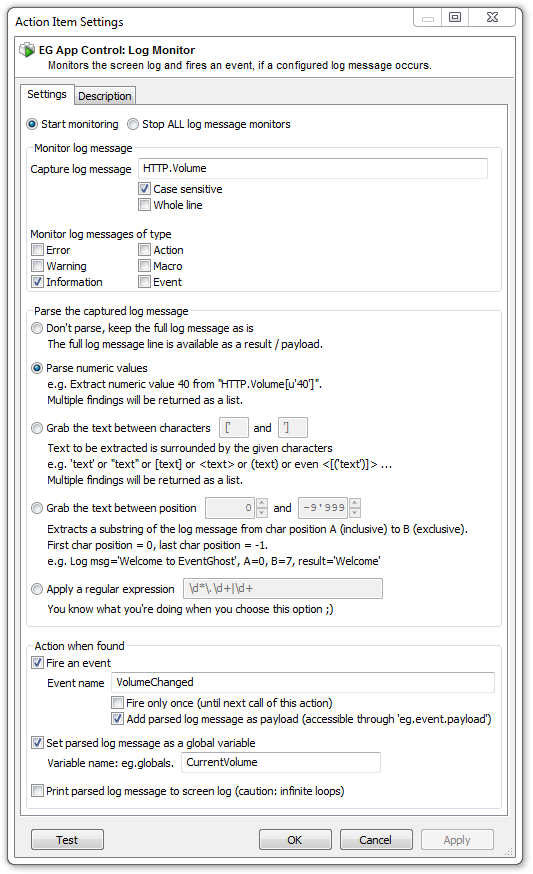
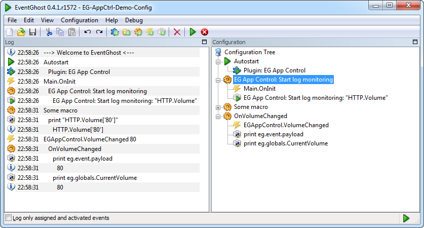
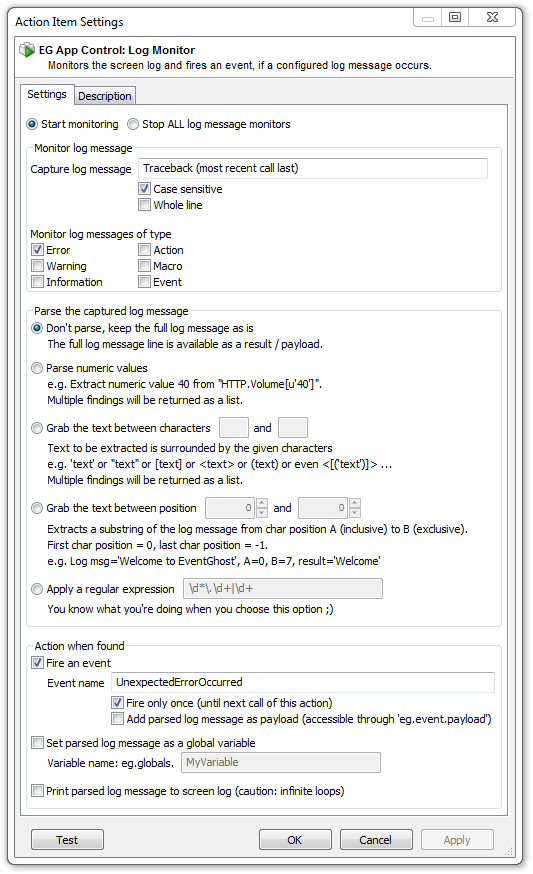
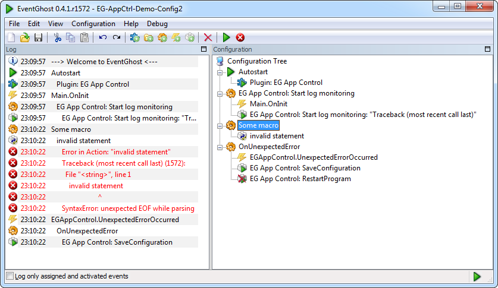

The Log Monitor action surveils the screen log for a given search pattern. When the search pattern occurs, it fires an event. Optionally the captured log message can be parsed, e.g. numbers, or other variables might be extracted from the string.
Important: Make sure when naming the event, and/or global variable, that is different to the sought after log message; otherwise infinite loops will occur! e.g. if you capture the string Error, don't call your event Error as well!
The action has two main usages:
Once the monitored message has been captured, it can be parsed for the data you're interested in. The action supports a couple of different parsing modes. All of them aim to extract variable data from the log message. A typical example might be: You've got a log message HTTP.Volume['80'] and you want to extract 80, and fire an event with this data as the payload and set the value of a global variable.
The configuration in this case might look like:

Now you can implement an event handler for the event EGAppControl.VolumeChanged to get notified when the volume has changed:
As configured before, the data is available in eg.event.payload as well as your own defined variable eg.globals.CurrentVolume.
The parsing mode Apply a regular expression allows to parse the string with a regex. This mode provides the highest flexibility of parsing the input data.If you're new to regex syntax, you may find many tutorials and other ressources about regular expressions in the internet. The plugin uses Python's re.findall(searchPattern, logMsg) method to parse. Results are always returned as a Python list (which might be empty, if the search pattern didn't match the log message).
For capturing errors the following settings might be appropriate:

In this example the string Traceback (most recent call last) is captured. If you're looking for another error, change the search string accordingly.
When the error occurs, an event EGAppCtrl.UnexpectedErrorOccurred is fired and you can use this event to trigger saving the configuration and restarting the application.

(Action RestartProgram has been disabled in this example in order to be able to take a screenshot)